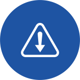

iWORKFLOW ADVANTAGES
A manual workflow is slow, prone to errors, often bottlenecked, difficult to measure, and lacks an audit trail.
Automated workflows give:
Faster
PROCESSING

FEWER
ERRORS
BETTER
TRACKING
DETAILED
REPORTS
REDUCED
COSTS
Automated workflow can also delegate many trivial jobs to machines so humans can be more
involved in strategy and innovative projects. if you use cloud workflow tools, your processes can be blazing fast,
globally accessible, and more secure than ever before.